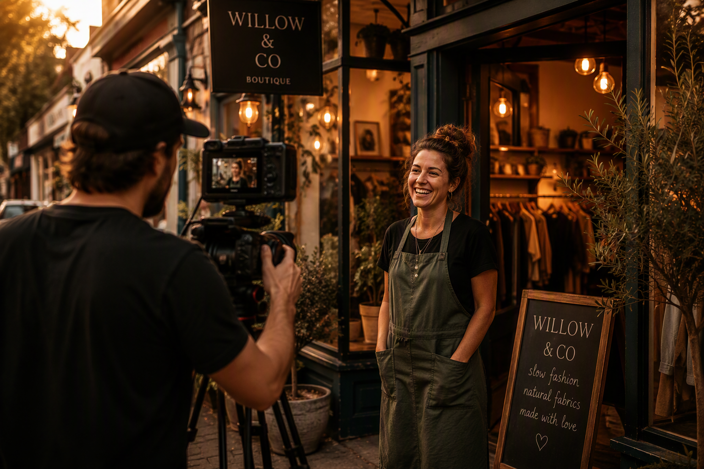
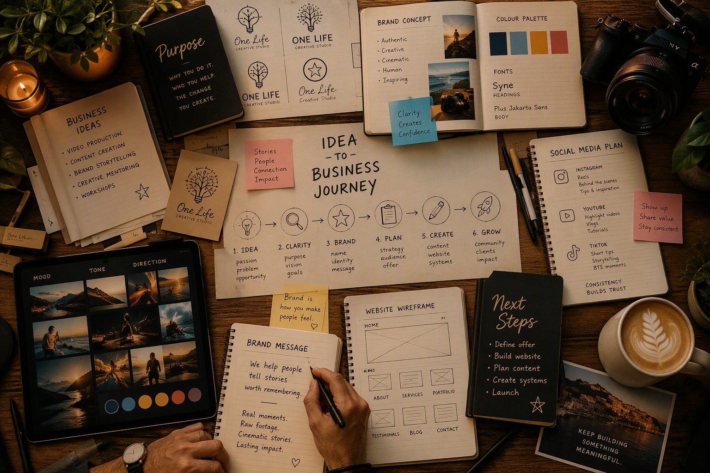

Clarity
Make sense of the idea and define what matters.
Creative Mentoring
Helping new businesses, creators and local operators discover their purpose, build their brand and confidently share their story.

Why this exists
One Life Creative Studio started with storytelling through video, but the same questions kept appearing before the camera ever switched on.
What is the idea? Who is it for? What makes it meaningful? How should it be explained, shared and brought to life?
Creative Mentoring is a natural extension of that work — a relaxed space to shape ideas, clarify messages and build confidence in what you are creating.
How I can help
Many people know they are good at what they do. They just need help packaging it, explaining it and communicating it with confidence.
Creative Mentoring helps bring clarity to your business idea, brand, message, content and next steps.
Think of it as a creative conversation — not formal consulting.

Who it's for
You do not need everything figured out. You might have a name, a rough idea, a few services, or just a feeling that there is something you want to build.

My approach
These are relaxed, collaborative mentoring sessions designed to help you think clearly, explore ideas and make practical decisions.
We can talk through what you are building, who it is for, how to explain it, what content to create and what the next step should be.
Make sense of the idea and define what matters.
Explore names, messages, content and brand direction.
Leave with practical next steps and stronger direction.
The journey
The goal is simple: leave with more clarity than when you arrived.

Let's bring your ideas to life
If you are starting something, shaping something or trying to explain what you do, this is a relaxed place to begin.
onelifecreativestudio@gmail.com